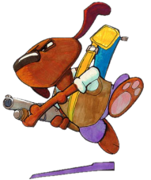
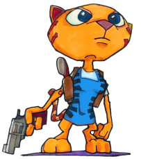
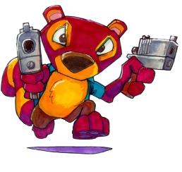
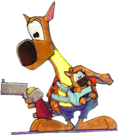
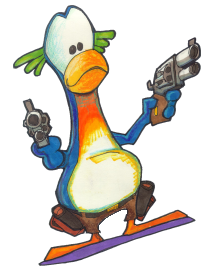
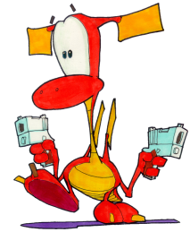

The Fur Fighters
Roofus

Name: Roofus the Hound
Age: 12 Years
Birthplace: Glasgow
Blood Group: 'A'
Height: 5'6" (1.7 Metres)
Special Ability: Digging into mounds
Close Attack: Mighty Head Butt
Spouse: Winnifred 'Winnie'
Flea Level: Compound Factions, near portable toilet
Nightmare: Returning to war
Voiced by: Scott McMurrey
Bio: The oldest of the Fur Fighters at 12 years old, this tough hound has dependability stamped all over him. Raised in the brutal inner city kennels of Glasgow, he joined the army to escape the slums so much as to fight. He was a natural soldier and won many medals but shunned all offers of promotion.
Age: 12 Years
Birthplace: Glasgow
Blood Group: 'A'
Height: 5'6" (1.7 Metres)
Special Ability: Digging into mounds
Close Attack: Mighty Head Butt
Spouse: Winnifred 'Winnie'
Flea Level: Compound Factions, near portable toilet
Nightmare: Returning to war
Voiced by: Scott McMurrey
Bio: The oldest of the Fur Fighters at 12 years old, this tough hound has dependability stamped all over him. Raised in the brutal inner city kennels of Glasgow, he joined the army to escape the slums so much as to fight. He was a natural soldier and won many medals but shunned all offers of promotion.
Juliette
 Name:Juliette the CatAge:5 Years
Birthplace: Paris, France
Blood Group: 'AB'
Height: 5'2" (1.6 Metres)
Special Ability: Climbing up scratches
Close Attack: Claw Swipe
Spouse: Claude
Flea Level: VLF Facility, up a high ledge via Cat Scratches
Nightmare: Working in a team, or having friends turn on her
Voiced by: Corinne Kempa
Bio: Beautiful and athletic, Juliette is a supreme warrior. She can be temperamental, stubborn and selfish with an annoying tendency not to listen to others. When frustrated, she becomes tempted to go it alone but, with persuasion, she'll stick with the team.
Chang
 Name:Change the FirefoxAge: 5 Years
Birthplace:Hong Kong
Blood Group: 'B'
Height: 4'3" (1.3 Metres)
Special Ability:Climbing into small spaces
Close Attack: Spinning Whirlwind Kick
Spouse: Mai
Flea Level: Lower East Quack, behind a fence near the subway exit
Nightmare: Not being seen
Voiced by: Daniel York
Bio: Chang was born into a rich family in rural Hong Kong and raised in the bright lights of the country's southern boom cities. When the war started, he horrified his kin by choosing to become a common foot soldier. His encyclopedic knowledge of science and strategy combined with his natural agility and cunning, make him one of the Fur Fighters best weapons.
Bungalow
 Name:Bungalow the KangarooAge:7 Years
Birthplace: Alice Springs, Australia
Blood Group: 'A'
Height: 6'6" (2.0 Metres)
Special Ability:Jumping high
Close Attack: Power Punch
Spouse: Esmerelda
Flea Level: Jungle of Despair, Elephant Graveyard
Nightmare: Being tasked with something complicated
Voiced by: Guy Taylor
Bio: Bungalow is a fully - grown male Kangaroo and best friend to Roofus the Hound. Slow and easygoing , this massive antipode has a lot more muscle than sense. He is happiest when taking orders from others - usually Roofus or his domineering wife!
Rico
 Name:Rico the PenguinAge:5 Years
Birthplace:Tierra Del Fuego, Argentina
Blood Group: 'O'
Height: 5'9" (1.8 Metres)
Special Ability:Swimming
Close Attack: Furious Peck
Spouse: Juanita
Flea Level: Secret Island, opened after catching Fifi
Nightmare: Insecurity, shame
Voiced by: Alan Turner
Bio: Raised among the huge penguin communities of southern Argentina, this idealistic bird always craved more than his mundane life of fishing and dodging orcas. He set forth in search of his dream and stumbled on the Fur Fighters who helped him to hone his talents. Rico is somewhat overconfident and prone to daydreaming. He isn't quite the hero he imagines himself to be, but there's no one more skilled in the water.
Tweek
 Name:Tweek the DragonAge:0.002 Years
Birthplace:Royston Vasey, Wales
Blood Group: 'A'
Height: 7'2" (2.2 Metres)
Special Ability:Gliding
Close Attack: Flaming Sneeze
Parent: Gwynth
Flea Level: Dinos Upstairs, on a toilet
Nightmare: Being separated
Voiced by: Daniel York
Bio: Tweek is less than a day old. The last of his mother's eggs to hatch, he only spent a few precious minutes with her and his siblings before General Viggo stole them away. Although he is the largest and slowest of his brothers and sisters, he knows he must fight to get them back. Clumsy and nervous, he finds his new world scary and fascinating. Luckily, he can rely on his instinctive knowledge of firearms and the other Fur Fighters looking out for him.
Total Fur Fighters is © 2001-2018 Fur Fighter Master aka RadSpyro. Website design © Kari of xemnas.net. Fur Fighters belongs to Muffin Games.